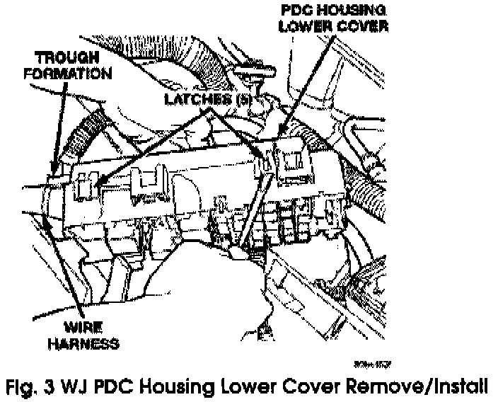
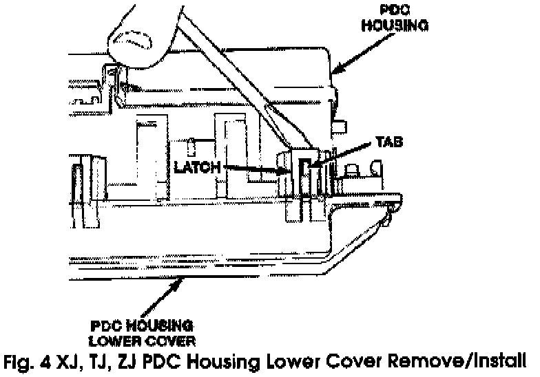
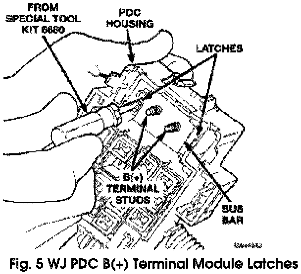
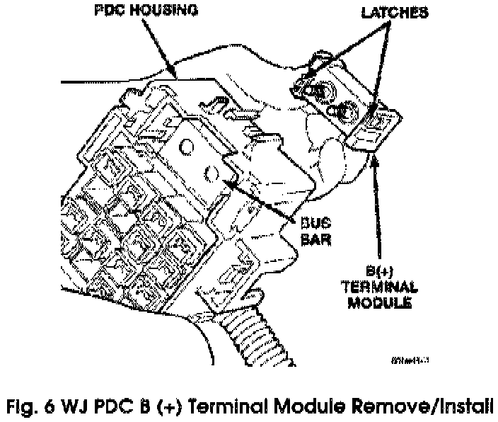
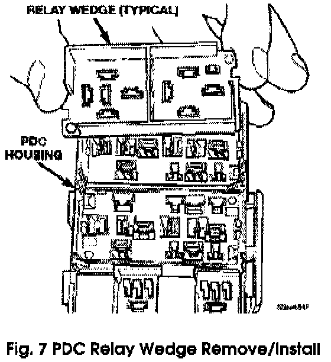
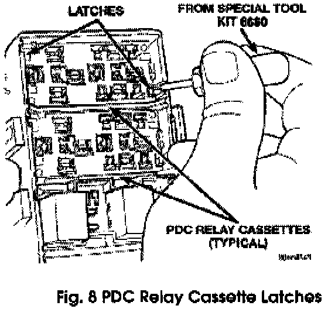
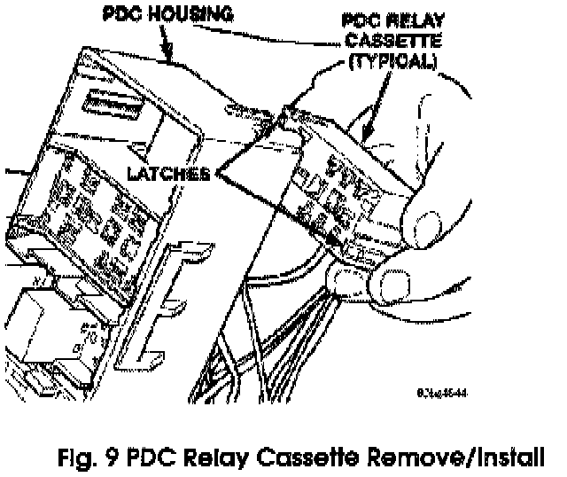

Disassembly
PDC HOUSING LOWER COVER(1) For XJ, TJ, ZJ disconnect and isolate the battery negative cable. For WJ remove the battery from the battery support. Refer to Battery in the index of the service manual for the location of the battery removal procedures.
(2) Unlatch and remove the cover from the PDC.
(3) Remove the battery wire harness PDC take out eyelet(s) from the PDC B (+) terminal stud(s).
(4) Disengage the latches on the PDC mounting bracket from the tabs on the PDC housing, and pull the PDC housing upward to disengage the mounting slots from the stanch ions of the mounting bracket.


(5) Using a trim stick or another suitable wide fat-bladed tool, gently pry the latches on each side and one end of the PDC housing that secure the housing lower cover to the PDC and remove the housing lower cover (Fig. 3 and Fig. 4).
PDC B (+) TERMINAL MODULE (WJ ONLY)
(1) Remove the PDC housing lower cover.

(2) From the top of the PDC housing, use a small screwdriver or a terminal pick tool (Special Tool Kit 6680) to release the two latches that secure the B (+) terminal module in the PDC (Fig. 5).
(3) Gently and evenly press the two B (+) terminal studs down through the bus bar in the PDC.

(4) From the bottom of the PDC housing, remove the B (+) terminal module from the PDC (Fig. 6).
PDC RELAY WEDGE
(1) Remove the PDC housing lower cover.
(2) Remove each of the relays from the PDC relay wedge to be removed.
(3) From the bottom of the PDC housing, use a small screwdriver or a terminal pick tool (Special Tool Kit 6680) to release the two latches (yellow) that secure the relay wedge to the PDC relay cassette.

(4) From the top of the PDC housing, remove the relay wedge from the PDC relay cassette (Fig. 7).
PDC RELAY CASSETTE
(1) Remove the relay wedge from the PDC relay cassette to be removed.
NOTE:
It may be necessary to remove relay cassettes that are not being serviced from the PDC housing in order to obtain sufficient clearance to access the faulty relay cassette. The same service procedure is repeated as necessary to remove each of the interfering relay wedges and relay cassettes from the PDC housing.

(2) From the top of the PDC housing, use a small screwdriver or a terminal pick tool (Special Tool Kit 6680) to release the two latches that secure the relay cassette in the PDC (Fig. 8).
(3) Gently and evenly press the relay cassette down through the PDC housing.

(4) From the bottom of the PDC housing, remove the relay cassette from the PDC (Fig. 9).
CAUTION:
Do not remove the wiring and terminals from the terminal cavities of the faulty PDC relay cassette at this time. Refer to the Assembly procedure that follows for the proper procedures for transferring the wiring and terminals to the replacement PDC relay cassette.